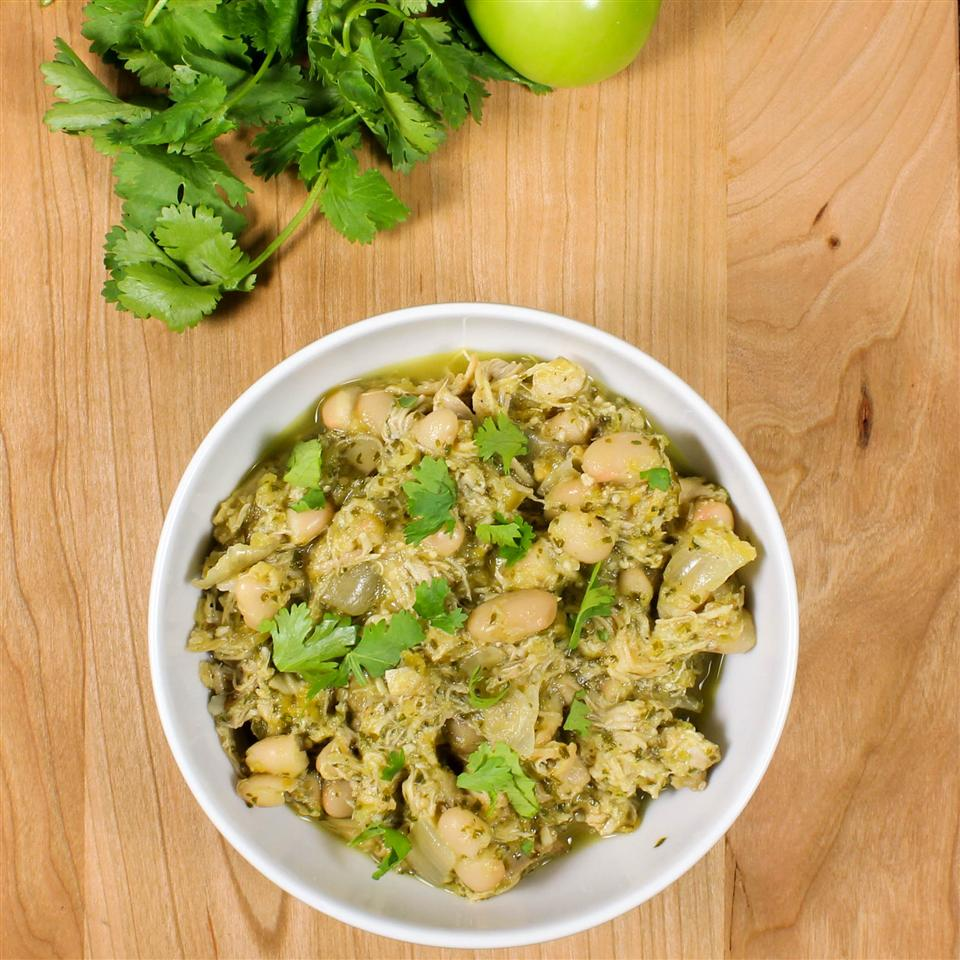

Slow Cooker Green Chile Chicken

Description
Wholesome version of chicken chile made in a slow cooker! Slow cooker green chile chicken is
hearty with tomatillos and a hint of spice. Serve over brown rice and garnish with chopped
cilantro, pico de gallo, avocado, and cheese, or wrap in a tortilla!
Ingredients
- 1 bunch fresh cilantro, stems removed
- 1 ½ pounds boneless chicken thighs
- 4 cups water
- 1 onion, quartered
- 2 cloves garlic, peeled
- 2 tablespoon ground cumin
- 2 tablespoon chili powder
- 2 tablespoon ground black pepper
- 1 teaspoon salt
- cooking spray
- 1 pound fresh tomatillos, husks removed, halved
- 1 tablespoon canola oil
- 1 (4 ounce) can chopped green chilies
- 2 tablespoons white vinegar
- 1 tablespoon honey
- 2 teaspoons kosher salt
- 1 cup great Northern beans, rinsed and drained
Steps
- Remove stems from cilantro and tie together; save leaves for sauce.
- Place cilantro stems, chicken thighs, water, onion, and garlic into a slow cooker. Season
with 1 tablespoon cumin, 1 tablespoon chili powder, 1 tablespoon pepper, and 1 teaspoon
salt.
- Cook on Low until chicken is no longer pink in the centers and juices run clear, 8 to 10
hours. Transfer chicken to a plate and shred using 2 forks. Set aside. Reserve 1 to 1 1/2
cups cooking liquid. Let onion and garlic cool slightly, about 5 minutes. Dice and set
aside.
- Preheat the oven to 450 degrees F (230 degrees C). Spray a baking sheet with cooking
spray.
- Place tomatillos cut-side down and jalapeno onto the prepared baking sheet. Drizzle with
canola oil.
- Roast in the preheated oven for 25 minutes
- Remove from the oven and wrap jalapeno pepper in aluminum foil to let 'sweat' for about
10 minutes. Remove skin from jalapeno.
- Transfer tomatillos, jalapeno, reserved cilantro leaves, green chiles, vinegar, cumin,
chili powder, honey, pepper, and salt to a food processor or blender. Mix sauce until
well combined.
- Pour tomatillo sauce into a large pot and add shredded chicken, diced onion and garlic,
and beans. Add reserved cooking liquid. Let simmer over medium-low heat for 15 minutes.
Serve.